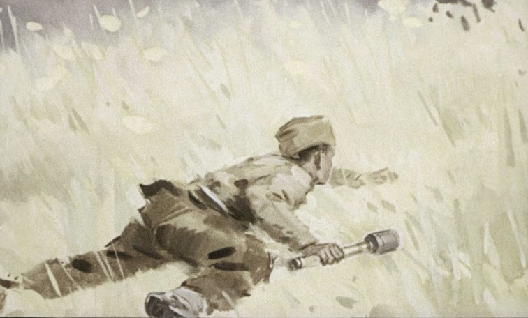

Гера Щербаков родился 4 сентября 1929 года в д.Подберезье, недалеко от г.Витебска.
Гера учился в Ольговской школе Витебского района. Война застала Геру близ Ольгово. Когда фронт стал приближаться к Витебску, мальчик с мамой и сестрой переехали в деревню Манулки Суражского района к дедушке, а отец Афанасий Тимофеевич Щербаков остался на месте, чтобы эвакуировать хозяйство, угнать в тыл скот. Вскоре коммунист Афанасий Щербаков нелегально прибыл в деревню Манулки, организовал патриотическую группу из местных коммунистов и попавших в окружение советских воинов. Летом 1942 года он стал комиссаром партизанской бригады «Алексея» и секретарем Лиозненского подпольного райкома партии.
В Манулки нагрянули фашисты: искали отца мальчика. Арестовали и расстреляли дедушку Геры. В одном из партизанских рейдов враги убили его мать. Афанасий Тимофеевич решил отправить детей с бабушкой в советский тыл. Гера категорически отказался и уговорил отца оставить его в партизанской бригаде.
Весной 1942 года Гера присоединился к подрывникам партизанской бригады «Алексея».
«Ночь. Два партизана разведали подход к железной дороге. Оставшиеся прикрывали отход группы. Оглушительный взрыв, скрежет летящих под откос вагонов оповестил: партизанская мина сработала. Операция прошла успешно. Был спущен под откос эшелон. Партизаны начали расстреливать уцелевших фашистов. Гера бросил гранату со словами: «Это вам за дедушку и за маму».
В 1943 году на территорию, где действовала партизанская бригада «Алексея», одна за другой направлялись карательные экспедиции врага. В конце апреля гитлеровцы бросили туда ещё больше сил. Начались кровопролитные бои.
30 апреля 1943 года фашисты блокировали небольшую группу партизан, среди которых были Гера Щербаков. Вооружившись автоматом погибшего товарища, Гера стрелял по наседавшим фашистам. Патроны закончились. Дождавшись, когда фашисты подошли совсем близко, Гера бросил гранату. В это время вражеская пуля оборвала жизнь юного пионера-героя.
Пионер Гера Щербаков, ученик Ольговской школы, героически погиб в возрасте 13 лет.
С октября 2023 года память о пионере-герое увековечена в названии ГУО «Ольговская базовая школа Витебского района».
В ГУО «Ольговская базовая школа Витебского района имени пионера-героя Геры Щербакова» сохранилась Почётная грамота, которой был награждён Гера Щербаков в 1940 году за отличные успехи в учёбе и примерное поведение.